StyleGAN: Explicit Styles, Learned Noise and Two Normalizations
Abstract
Two compact8x8 generators separate a latent mapping, per-layer styles and supplied spatial noise. One normalizes feature maps before an affine style; the other modulates and demodulates kernels per example. The native C++ APIs expose both paths without hiding noise draws, truncation or optimizer updates. Small worked examples check population moments, normalization derivatives, noise learnability and least-squares scales before the complete editable two-trial training program. Three fixed epochs reproduce the original trajectories and controls exactly. The resulting images remain weak: reproducible style/noise effects and correct training arithmetic do not establish high-quality digit generation.
Separate latent mapping, per-layer styles and supplied spatial noise
[Karras, Laine and Aila, A Style-Based Generator Architecture for Generative Adversarial Networks (CVPR2019)](https://arxiv.org/abs/1812.04948) introduced the style-based generator. [Karras, Laine, Aittala, Hellsten, Lehtinen and Aila, Analyzing and Improving the Image Quality of StyleGAN (CVPR2020)](https://arxiv.org/abs/1912.04958) develops weight modulation and demodulation. These are compact teaching variants: fixed8x8 resolution, two 8-unit mapping layers, four feature channels, least-squares objectives and a 493-value critic. There is no growth schedule, moving-average generator, path-length penalty or full paper evaluation.
The diagram separates external inputs. Both styled feature layers read their own supplied spatial noise, multiplied by learned per-channel strengths. W0 styles the4x4 layer, W1 the8x8 layer and, in the modulated variant, the RGB map. Using one mapped W in both positions gives ordinary Z-only generation with explicit noise; using different mapped vectors produces the mixing controls.
#include <dm/dm.hpp>
int main() {
std::filesystem::create_directories("build");
dm::graphics::Diagram d(44, 1500);
dm::graphics::DiagramNodeStyle a;
a.width = 7.4;
a.height = 4.8;
a.font_size = 38;
d.node("z", {-16, 9}, "z[N,8]", a)
.node("map", {-6, 9}, "Pixel RMS + map\n2 dense/leaky", a)
.node("w", {5, 9}, "W0 / W1\nPer-layer styles", a)
.node("c", {-16, -3}, "Learned constant\n4x4x4", a)
.node("l4", {-6, -3}, "Styled layer4\n+ noise4", a)
.node("l8", {5, -3}, "Up2 / layer8\n+ noise8", a)
.node("rgb", {16, -3}, "RGB sigmoid\n8x8x1", a)
.edge("z", "map")
.edge("map", "w")
.edge("c", "l4")
.edge("l4", "l8")
.edge("l8", "rgb")
.edge("w", "l8")
.save_svg("build/style_method.svg");
}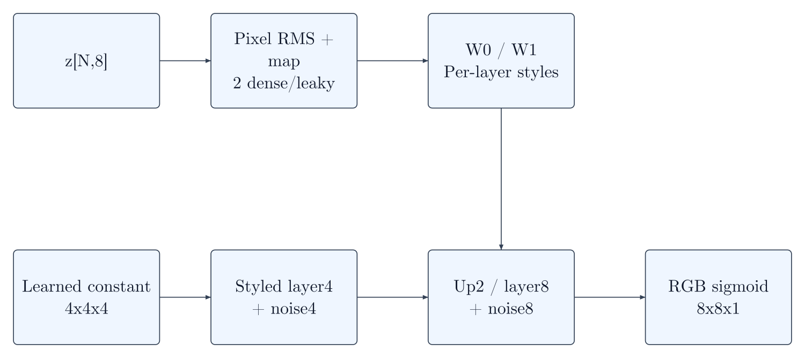
Check population spatial normalization before adding a style
For supplied values1,3,5,7, the mean is4 and population variance5. Native spatial_instance_normalize centers each NHWC row/channel over H,W and divides by sqrt(variance+epsilon), with epsilon=double(float32(1e-8)). It uses live means and variance, so derivatives include the normalization dependence. Constant channels become zero. It has no affine parameters or moving statistics. AdaIN then multiplies by1+scale_delta and adds shift. This example supplies scale_delta=1 and shift=.5; it does not fit a network.
#include <dm/dm.hpp>
int main() {
namespace n = dm::nn;
auto x = n::tensor({1., 3., 5., 7.}, {1, 2, 2, 1}, n::DType::Float64);
auto y = n::spatial_instance_normalize(x);
auto affine = y * 2. + .5;
if (std::abs(n::mean(y).item()) > 1e-14 ||
std::abs(n::mean(n::square(y)).item() - 5. / (5. + double(1e-8f))) > 1e-14)
throw std::runtime_error("population moments");
auto p = dm::graphics::RPlot::create();
std::vector<double> index{0, 1, 2, 3};
p.y_limits(-3, 6)
.points(index, y.to_vector<double>(), "Normalized", {37, 99, 235}, 5)
.points(index, affine.to_vector<double>(), "Gain2, shift.5", {220, 38, 38}, 5)
.x_label("Supplied spatial position")
.y_label("Feature value")
.title("Population normalization followed by a separate affine style")
.save_svg("build/style_spatial_toy.svg");
}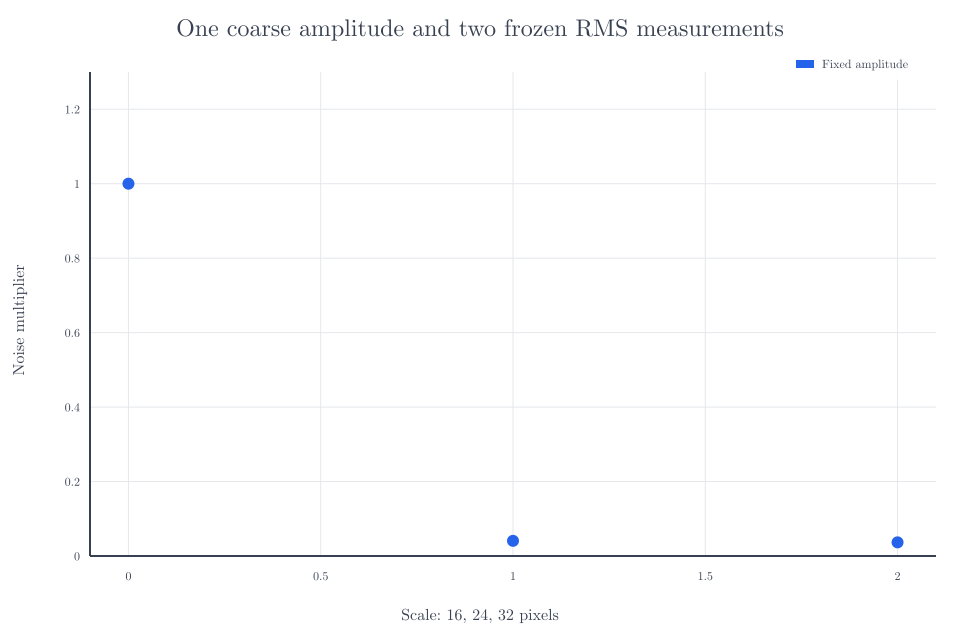
Keep the kernel-normalization derivative
A1x1 kernel with channel weights(3,4), gains(1,1) and input(1,0) gives 3/sqrt(25+epsilon), approximately.6. Its weight partials are approximately (.128,-.096); stopping the demodulator would incorrectly give(.2,0). The native primitive returns both image and live per-output demodulator. It accepts signed and zero channel gains, odd square kernels and rectangular NHWC images. SAME zero padding and row-major tap accumulation preserve source Float32 grouping. The modulated RGB map sets demodulate=false, retaining the source computed-factor-times-zero-plus-one path; its output scales with gains.
#include <dm/dm.hpp>
int main() {
namespace n = dm::nn;
auto t = n::DType::Float64;
auto x = n::tensor({1., 0.}, {1, 1, 1, 2}, t);
auto w = n::tensor({3., 4.}, {1, 1, 2, 1}, t).requires_grad_();
auto o = n::modulated_conv2d(x, w, n::ones({1, 2}, t));
auto dw = n::grad(n::sum(o.image), {w})[0];
if (std::abs(dw.at({0, 0, 0, 0}) - .128) > 1e-9 || std::abs(dw.at({0, 0, 1, 0}) + .096) > 1e-9)
throw std::runtime_error("live normalization partials");
std::vector<double> gain, demodulated, rgb;
for (int i = 1; i <= 40; ++i) {
double a = .05 * i;
auto s = n::full({1, 2}, a, t);
gain.push_back(a);
demodulated.push_back(n::modulated_conv2d(x, w, s).image.item());
rgb.push_back(n::modulated_conv2d(x, w, s, false).image.item());
}
auto p = dm::graphics::RPlot::create();
p.y_limits(-.2, 8)
.lines(gain, demodulated, "Demodulated", {37, 99, 235}, 2)
.lines(gain, rgb, "RGB: no demodulation", {220, 38, 38}, 2)
.x_label("Common positive factor applied to both channel gains")
.y_label("1x1 output for supplied input(1,0)")
.title("Feature kernels normalize scale; RGB preserves scale")
.save_svg("build/style_demod_toy.svg");
}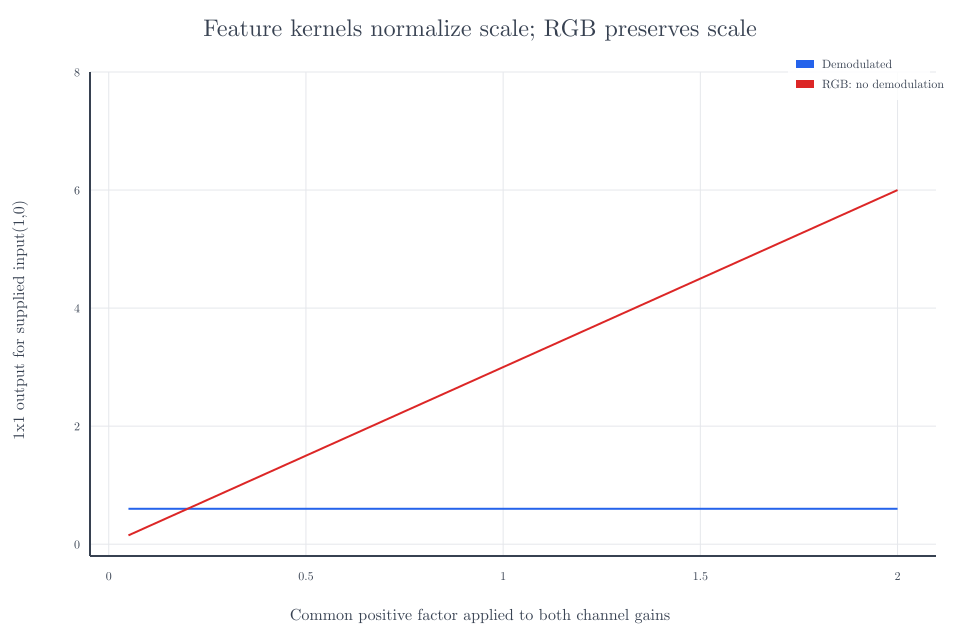
Zero noise strength blocks noise initially, while the strength can learn
The source initializes each four-channel noise strength to zero. Thus changing supplied spatial noise initially changes no output bits and the noise-input partial is zero. The strength partial need not be zero: for h=base+strength*noise, at strength0 the derivative with respect to strength is noise. This supplied four-position example has sum(noise)=10. The full model tests check the same property through both styled generators, and show that nonzero strengths restore noise-input derivatives. Noise is never sampled secretly inside synthesis.
#include <dm/dm.hpp>
int main() {
namespace n = dm::nn;
auto t = n::DType::Float64;
auto noise = n::tensor({1., 2., 3., 4.}, {1, 2, 2, 1}, t).requires_grad_();
auto strength = n::zeros({1}, t).requires_grad_();
auto loss = n::sum(n::ones(noise.shape(), t) + noise * strength);
auto partial = n::grad(loss, {noise, strength});
if (n::max(n::abs(partial[0])).item() != 0 || partial[1].item() != 10)
throw std::runtime_error("learnable zero strength");
std::print(
"| Supplied control | Partial |\n|---|---:|\n| max absolute noise-input partial at strength0 "
"| {} |\n| strength partial at strength0 | {} |\n",
n::max(n::abs(partial[0])).item(),
partial[1].item());
}| Supplied control | Partial |
|---|---|
| max absolute noise-input partial at strength0 | 0 |
| strength partial at strength0 | 10 |
Preserve the least-squares loss scales and fresh-generator schedule
D minimizes.5 times the sum of the real-to1 and fake-to0 mean squares. G minimizes the full fake-to1 mean square, with no half. At zero scores D=.5, G=1; at fake score.25 the G partial is2*(.25-1)=-1.5. Real and fake pools may have different row counts; means stay separate. During fitting each critic capture/write precedes a fresh generator forward through the updated critic, using the same latent/noise batch. Each optimizer owns one store alone.
#include <dm/dm.hpp>
int main() {
namespace n = dm::nn;
auto t = n::DType::Float64;
auto real = n::zeros({2, 1}, t), fake = n::full({3, 1}, .25, t).requires_grad_();
auto d = .5 * (n::mean(n::square(real - 1.)) + n::mean(n::square(fake)));
auto g = n::mean(n::square(fake - 1.));
auto partial = n::grad(g, {fake})[0];
if (d.item() != .53125 || g.item() != .5625 || n::sum(partial).item() != -1.5)
throw std::runtime_error("loss scales");
std::print(
"| Supplied score control | Value |\n|---|---:|\n| D loss | {} |\n| G loss | {} |\n| sum of "
"fake-score G partials | {} |\n",
d.item(),
g.item(),
n::sum(partial).item());
}| Supplied score control | Value |
|---|---|
| D loss | 0.53125 |
| G loss | 0.5625 |
| sum of fake-score G partials | -1.5 |
Trace both actual generator paths
Mapping uses pixel RMS normalization followed by two dense8/LeakyReLU(.2) layers:144 values in four leaves. A learned[1,4,4,4] constant is tiled per row. AdaIN uses plain3x3 convolution, noise/bias, leaky activation, population spatial normalization, then affine scale/shift. The modulated path learns affine(W)+1 channel gains and demodulates each row's feature kernel; there is no AdaIN. Its1x1 RGB uses W1 with no demodulation. All kernels use source initialization; noise strengths and biases start zero. The executed traces call the canonical APIs and expose actual constant, mapped styles, noise and synthesis boundaries. For the single-input plotting interface only, each trace packs Z8,noise4(16) and noise8(64) into an88-value supplied input, then slices them explicitly. Synthesis still uses the separate native arguments; no additional learned leaves are added.
#include <dm/dm.hpp>
int main() {
namespace n = dm::nn;
namespace m = n::models;
n::ParameterStore g(6607);
n::Module model(
[&](const n::Tensor& packed) {
auto z = n::slice(packed, {0, 0}, {1, 8});
auto n4 = n::reshape(n::slice(packed, {0, 8}, {1, 16}), {1, 4, 4, 1});
auto n8 = n::reshape(n::slice(packed, {0, 24}, {1, 64}), {1, 8, 8, 1});
n::model_stage("Supplied Z8", packed, z);
n::model_stage("Supplied noise4", packed, n4);
n::model_stage("Supplied noise8", packed, n8);
auto w = m::StyleGanMap(g, z);
n::model_stage("Pixel RMS + dense8/leaky x2", z, w);
auto o = m::StyleGanSynthesize(g, w, w, n4, n8, false);
n::model_stage("Tile learned constant", g.at("constant"), o.tiled_constant);
n::model_stage(
"Styled4 + supplied noise4", std::vector<n::Tensor>{o.tiled_constant, w, n4}, o.first);
n::model_stage("Nearest up2", o.first, o.upsampled);
n::model_stage(
"Styled8 + supplied noise8", std::vector<n::Tensor>{o.upsampled, w, n8}, o.second);
return n::model_stage("RGB sigmoid", std::vector<n::Tensor>{o.second, w}, o.image);
},
"adain compact generator");
n::ModelPlotOptions options;
options.style = n::ModelPlotStyle::Flow;
options.detail = n::ModelPlotDetail::Blocks;
options.sizing.minimum_extent = 2;
options.sizing.max_planes = 4;
auto figure = model.plot(n::ones({1, 88}), options);
if (figure.parameter_count() != 661 || g.size() != 17)
throw std::runtime_error("executed source census");
figure.save_svg("build/style_adain_architecture.svg");
}#include <dm/dm.hpp>
int main() {
namespace n = dm::nn;
namespace m = n::models;
n::ParameterStore g(6607);
n::Module model(
[&](const n::Tensor& packed) {
auto z = n::slice(packed, {0, 0}, {1, 8});
auto n4 = n::reshape(n::slice(packed, {0, 8}, {1, 16}), {1, 4, 4, 1});
auto n8 = n::reshape(n::slice(packed, {0, 24}, {1, 64}), {1, 8, 8, 1});
n::model_stage("Supplied Z8", packed, z);
n::model_stage("Supplied noise4", packed, n4);
n::model_stage("Supplied noise8", packed, n8);
auto w = m::StyleGanMap(g, z);
n::model_stage("Pixel RMS + dense8/leaky x2", z, w);
auto o = m::StyleGanSynthesize(g, w, w, n4, n8, true);
n::model_stage("Tile learned constant", g.at("constant"), o.tiled_constant);
n::model_stage(
"Styled4 + supplied noise4", std::vector<n::Tensor>{o.tiled_constant, w, n4}, o.first);
n::model_stage("Nearest up2", o.first, o.upsampled);
n::model_stage(
"Styled8 + supplied noise8", std::vector<n::Tensor>{o.upsampled, w, n8}, o.second);
return n::model_stage("RGB sigmoid", std::vector<n::Tensor>{o.second, w}, o.image);
},
"modulated compact generator");
n::ModelPlotOptions options;
options.style = n::ModelPlotStyle::Flow;
options.detail = n::ModelPlotDetail::Blocks;
options.sizing.minimum_extent = 2;
options.sizing.max_planes = 4;
auto figure = model.plot(n::ones({1, 88}), options);
if (figure.parameter_count() != 625 || g.size() != 19)
throw std::runtime_error("executed source census");
figure.save_svg("build/style_modulated_architecture.svg");
}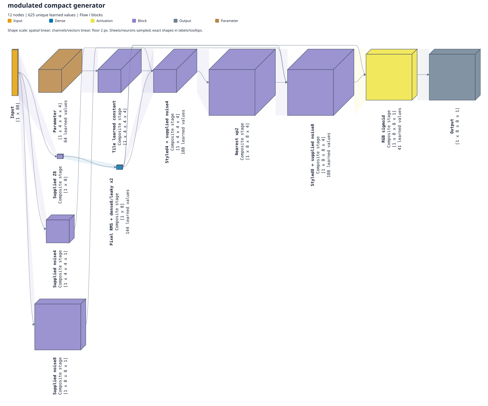
Run the complete two-trial experiment with explicit captures and writes
The native loader prepares and checks balanced, disjoint MNIST pools of1000 fitting,200 validation and200 test rows. Half-pixel bilinear28→8 resize reuses the canonical BigGanResize8 operation. Labels and source IDs are retained only as metadata. Each trial starts fresh Gseed6607/Dseed6619, uses batch order6679 and separate Adam(.0002,.5,.999,1e-8). There are32 batches per epoch, including the final8 rows:96 writes per owner over three epochs,192 per trial,384 total. The original comment saying96 steps per epoch was inconsistent with its loop; the report preserves the actual loop. Validation is recorded after every epoch; selection is the fixed final epoch, never a test-driven choice.
Latent and noise draws are source-compatible midpoint-MT Box–Muller banks. For each row a single80-value noise bank supplies the first16 values to4x4 and the remaining64 to8x8. Drawing those shapes from independent streams changes the method. Validation uses zseed6637/noiseseed6653, test6659/6661; epoch e uses6689+e/6701+e. The visible program saves the full source outputs, all384 phase captures per trial and12 extra probes per trial, checks unselected owners, restores independent stores and performs every source inference control. No old example model class, hidden training helper or opposite checkout is used.
#include <dm/dm.hpp>
namespace nn = dm::nn;
namespace m = nn::models;
using nn::Tensor;
using Arrays = std::map<std::string, Tensor>;
void Require(bool ok, const std::string& why) {
if (!ok)
throw std::runtime_error(why);
}
void SaveArrays(const std::string& path, const Arrays& a) {
nn::save_npz(path, nn::NamedTensors(a.begin(), a.end()));
}
Tensor Rows(const Tensor& x, const std::vector<std::int64_t>& rows) {
return nn::take_rows(x, rows);
}
bool BitEqual(const Tensor& a, const Tensor& b) {
return nn::equal_bits(a, b);
}
bool BitEqual(const Arrays& a, const Arrays& b) {
if (a.size() != b.size())
return false;
for (const auto& [k, v] : a)
if (!b.count(k) || !BitEqual(v, b.at(k)))
return false;
return true;
}
double MaxAbsDiff(const Tensor& a, const Tensor& b) {
return nn::max(nn::abs(nn::cast(a, nn::DType::Float64) - nn::cast(b, nn::DType::Float64))).item();
}
Arrays Fields(const m::StyleGanOutput& o) {
return {
{"fake", o.fake},
{"mapped", o.mapped},
{"first_style", o.first_style},
{"second_style", o.second_style},
{"first_demodulator", o.first_demodulator},
{"second_demodulator", o.second_demodulator},
{"real_score", o.real_score},
{"fake_score", o.fake_score},
{"d_loss", o.d_loss},
{"g_loss", o.g_loss}};
}
void Initialize(nn::ParameterStore& g, nn::ParameterStore& d, bool v2) {
nn::NoGradGuard guard;
auto w = m::StyleGanMap(g, nn::zeros({1, 8}));
auto o = m::StyleGanSynthesize(g, w, w, nn::zeros({1, 4, 4, 1}), nn::zeros({1, 8, 8, 1}), v2);
m::StyleGanDiscriminate(d, o.image);
}
Arrays Snapshot(const std::vector<nn::ParameterStore*>& stores) {
Arrays a;
for (int k = 0; k < 2; ++k)
for (const auto& name : stores[k]->names())
a.emplace(std::to_string(k) + "/" + name, stores[k]->at(name).detach().clone());
return a;
}
void Restore(const std::vector<nn::ParameterStore*>& stores, const std::string& file) {
auto a = nn::load_npz(file);
Require(a.size() == stores[0]->size() + stores[1]->size(), "complete checkpoint");
for (const auto& [key, value] : a) {
Require(
key.size() > 2 && (key[0] == '0' || key[0] == '1') && key[1] == '/',
"known checkpoint owner");
auto& p = *stores[key[0] - '0'];
Require(
p.contains(key.substr(2)) && p.at(key.substr(2)).shape() == value.shape(),
"known matching leaf");
p.set(key.substr(2), value);
}
}
std::vector<Tensor> OrderedGradient(nn::ParameterStore& p, int group, const Arrays& a) {
std::vector<Tensor> out;
for (const auto& name : p.names())
out.push_back(a.at(std::to_string(group) + "/" + name));
return out;
}
void RequireOnlyOwnersChanged(
const Arrays& before,
const Arrays& after,
const std::vector<std::string>& prefixes,
const std::string& why,
bool require_change) {
bool changed = false;
for (const auto& [key, v] : before) {
bool selected = false;
for (const auto& prefix : prefixes)
selected |= key.starts_with(prefix);
if (!BitEqual(v, after.at(key))) {
Require(selected, why);
changed = true;
}
}
if (require_change)
Require(changed, why + " changes selected weights");
}
Tensor Synthesize(
nn::ParameterStore& g,
const Tensor& w0,
const Tensor& w1,
const Tensor& a,
const Tensor& b,
bool v2) {
nn::NoGradGuard guard;
return m::StyleGanSynthesize(g, w0, w1, a, b, v2).image;
}
Tensor Generate(nn::ParameterStore& g, const Tensor& z, const Tensor& a, const Tensor& b, bool v2) {
nn::NoGradGuard guard;
auto w = m::StyleGanMap(g, z);
return m::StyleGanSynthesize(g, w, w, a, b, v2).image;
}
namespace {
double Value(const Arrays& a, const std::string& key) {
return a.at(key).item();
}
/// 28x28 -> 8x8 bilinear with half-pixel centres (scale 3.5).
Tensor Resize8(const Tensor& x) {
return m::BigGanResize8(x);
}
void Mosaic(const std::filesystem::path& path, const Tensor& images, std::int64_t columns) {
nn::save_image_grid(
nn::reshape(images, {-1, 8, 8, 1}), path.string(), columns, 0, 1, 4, 220 / 255., 8);
}
struct Inputs {
Tensor z, noise4, noise8;
};
/// z [n, 8] from GaussianNoise(zseed); per row 80 noise values from nseed: 16 for 4x4, 64 for 8x8.
Inputs Draw(int n, std::uint32_t zseed, std::uint32_t nseed) {
const Tensor z = nn::cast(m::GaussianNoise({8}, n, zseed), nn::DType::Float32);
const Tensor noise = nn::cast(m::GaussianNoise({80}, n, nseed), nn::DType::Float32);
return {
z,
nn::reshape(nn::slice(noise, {0, 0}, {n, 16}), {n, 4, 4, 1}),
nn::reshape(nn::slice(noise, {0, 16}, {n, 64}), {n, 8, 8, 1})};
}
void SaveInputs(const std::filesystem::path& path, const Inputs& x) {
SaveArrays(path.string(), {{"z", x.z}, {"noise4", x.noise4}, {"noise8", x.noise8}});
}
/// Every row replaced by row 0.
Tensor CommonNoise(const Tensor& x) {
std::vector<std::int64_t> rows(std::size_t(x.size(0)), 0);
return Rows(x, rows);
}
void Train(
const std::filesystem::path& root,
const std::vector<Tensor>& images,
int epochs,
bool version2,
const std::string& init) {
const auto dir = root / (version2 ? "modulated" : "adain");
std::filesystem::create_directories(dir);
const auto probe_root = dir;
std::filesystem::create_directories(probe_root / "phases");
const auto validation = Draw(200, 6637, 6653), test = Draw(200, 6659, 6661);
SaveInputs(dir / "validation_inputs.npz", validation);
SaveInputs(dir / "test_inputs.npz", test);
// Parameter order and native initialization match each independently seeded source trial.
nn::ParameterStore g(6607), d(6619);
std::vector<nn::ParameterStore*> stores{&g, &d};
Initialize(g, d, version2);
nn::OptimizerConfig config;
config.kind = nn::OptimizerKind::Adam;
config.beta1 = .5;
config.beta2 = .999;
config.epsilon = 1e-8;
nn::Optimizer go(g, .0002, config), do_(d, .0002, config);
std::vector<nn::Optimizer*> optimizers{&go, &do_};
auto evaluate = [&](const Tensor& x, const Tensor& z, const Tensor& a, const Tensor& b) {
nn::NoGradGuard guard;
return Fields(m::StyleGan(g, d, x, z, a, b, version2));
};
auto capture =
[&](int group, const Tensor& x, const Tensor& z, const Tensor& a, const Tensor& b) {
// Every invocation is fresh, so G sees the critic AFTER the D write below.
auto out = m::StyleGan(g, d, x, z, a, b, version2);
auto partial = nn::grad(group == 0 ? out.g_loss : out.d_loss, stores[group]->parameters());
Arrays result;
for (std::size_t k = 0; k < partial.size(); ++k)
result.emplace(std::to_string(group) + "/" + stores[group]->names()[k], partial[k]);
return result;
};
if (!init.empty())
Restore(
stores,
(std::filesystem::path(init) / (version2 ? "modulated" : "adain") / "initial_arrays.npz")
.string());
Require(g.count() == (version2 ? 625 : 661) && d.count() == 493, "styled G/D parameter counts");
SaveArrays((dir / "initial_arrays.npz").string(), Snapshot(stores));
SaveArrays(
(dir / "initial_outputs.npz").string(),
evaluate(images[2], test.z, test.noise4, test.noise8));
const auto changed_initial = Draw(200, 6659, 6673);
SaveArrays(
(probe_root / "probe-initial-noise-control.npz").string(),
evaluate(images[2], test.z, changed_initial.noise4, changed_initial.noise8));
Require(
BitEqual(
Generate(g, test.z, test.noise4, test.noise8, version2),
Generate(g, test.z, changed_initial.noise4, changed_initial.noise8, version2)),
"initial noise strength 0 means EXACT no effect");
nn::BatchOrder order(1000, 32, 6679);
int steps = 0;
std::ofstream history(dir / "history.tsv"), batches(dir / "batches.tsv");
history.precision(17);
history << "epoch\td_loss\tg_loss\n";
batches << "epoch\tstep\trow\n";
Tensor fx, fz, f4, f8;
const auto started = std::chrono::steady_clock::now();
for (int epoch = 1; epoch <= epochs; ++epoch) {
const auto input = Draw(1000, 6689 + epoch, 6701 + epoch);
order.begin_epoch();
for (;;) {
const auto rows = order.next();
if (rows.empty())
break;
const Tensor x = Rows(images[0], rows), z = Rows(input.z, rows),
n4 = Rows(input.noise4, rows), n8 = Rows(input.noise8, rows);
if (!steps) {
fx = x;
fz = z;
f4 = n4;
f8 = n8;
SaveArrays(
(probe_root / "probe-first-input.npz").string(),
{{"x", x}, {"z", z}, {"noise4", n4}, {"noise8", n8}});
SaveArrays((probe_root / "probe-first-forward.npz").string(), evaluate(x, z, n4, n8));
}
for (int group : {1, 0}) {
const auto before = Snapshot(stores);
const auto gradient = capture(group, x, z, n4, n8);
const auto name = "batch" + std::to_string(steps) + (group == 1 ? "-d" : "-g");
SaveArrays((probe_root / "phases" / (name + "-gradient.npz")).string(), gradient);
optimizers[group]->step(OrderedGradient(*stores[group], group, gradient));
SaveArrays((probe_root / "phases" / (name + "-after.npz")).string(), Snapshot(stores));
RequireOnlyOwnersChanged(
before,
Snapshot(stores),
{std::to_string(group) + "/"},
"styled GAN step updates ONLY own group",
!steps);
}
for (auto row : rows)
batches << epoch << '\t' << steps << '\t' << row << '\n';
++steps;
}
SaveArrays(
(probe_root / ("probe-epoch" + std::to_string(epoch) + ".npz")).string(), Snapshot(stores));
SaveArrays(
(probe_root / ("probe-epoch" + std::to_string(epoch) + "-test.npz")).string(),
evaluate(images[2], test.z, test.noise4, test.noise8));
const auto v = evaluate(images[1], validation.z, validation.noise4, validation.noise8);
SaveArrays(
(probe_root / ("probe-epoch" + std::to_string(epoch) + "-validation.npz")).string(), v);
history << epoch << '\t' << Value(v, "d_loss") << '\t' << Value(v, "g_loss") << '\n';
std::cout << (version2 ? "modulated" : "adain") << " epoch " << epoch
<< ": D/G=" << Value(v, "d_loss") << '/' << Value(v, "g_loss") << std::endl;
}
const double seconds =
std::chrono::duration<double>(std::chrono::steady_clock::now() - started).count();
const auto checkpoint = (dir / "final.npz").string();
SaveArrays(checkpoint, Snapshot(stores));
for (int group = 0; group < 2; ++group)
SaveArrays(
(dir / ("final_gradients_group" + std::to_string(group) + ".npz")).string(),
capture(group, fx, fz, f4, f8));
nn::ParameterStore restored_g(1), restored_d(2);
Initialize(restored_g, restored_d, version2);
std::vector<nn::ParameterStore*> restored{&restored_g, &restored_d};
Restore(restored, checkpoint);
nn::NoGradGuard inference_guard; // All remaining controls are explicit read-only inference.
auto deployed_evaluate = [&](const Tensor& x, const Tensor& z, const Tensor& a, const Tensor& b) {
return Fields(m::StyleGan(restored_g, restored_d, x, z, a, b, version2));
};
Require(BitEqual(Snapshot(stores), Snapshot(restored)), "all styled GAN weights restore exact");
const auto before = Snapshot(restored);
const auto output = deployed_evaluate(images[2], test.z, test.noise4, test.noise8);
const Tensor w = m::StyleGanMap(restored_g, test.z);
Require(BitEqual(w, output.at("mapped")), "Z ONLY mapping exact");
const Tensor plain = Generate(restored_g, test.z, test.noise4, test.noise8, version2),
from_w = Synthesize(restored_g, w, w, test.noise4, test.noise8, version2);
Require(
BitEqual(plain, output.at("fake")) && BitEqual(plain, from_w),
"Z + noise ONLY matches W styles + noise ONLY synthesis");
const double parity = MaxAbsDiff(
Generate(
restored_g, Rows(test.z, {0}), Rows(test.noise4, {0}), Rows(test.noise8, {0}), version2),
Rows(plain, {0}));
Require(parity < 3e-6, "styled G batch parity");
const auto other = Draw(200, 6719, 6673);
const Tensor other_w = m::StyleGanMap(restored_g, other.z);
const Tensor mixed = Synthesize(restored_g, w, other_w, test.noise4, test.noise8, version2),
mixed_first = Synthesize(restored_g, other_w, w, test.noise4, test.noise8, version2),
changed_noise = Generate(restored_g, test.z, other.noise4, other.noise8, version2);
const double style_effect = std::max(MaxAbsDiff(plain, mixed), MaxAbsDiff(plain, mixed_first));
const double noise_effect = MaxAbsDiff(plain, changed_noise);
Require(
style_effect > 1e-5 && noise_effect > 1e-7,
"actual per layer styles AND learned noise affect pixels");
const auto center_inputs = Draw(2048, 6733, 6737);
const Tensor center_w = m::StyleGanMap(restored_g, center_inputs.z);
const Tensor center =
nn::cast(nn::mean(nn::cast(center_w, nn::DType::Float64), {0}), nn::DType::Float32);
const Tensor n4 = CommonNoise(test.noise4), n8 = CommonNoise(test.noise8);
Arrays controls{
{"w", w},
{"other_z", other.z},
{"other_w", other_w},
{"mixed_second", mixed},
{"mixed_first", mixed_first},
{"changed_noise4", other.noise4},
{"changed_noise8", other.noise8},
{"changed_noise_fake", changed_noise},
{"center_z", center_inputs.z},
{"center_w", center_w},
{"center", center},
{"common_noise4", n4},
{"common_noise8", n8}};
controls.emplace(
"changed_only_noise4", Generate(restored_g, test.z, other.noise4, test.noise8, version2));
controls.emplace(
"changed_only_noise8", Generate(restored_g, test.z, test.noise4, other.noise8, version2));
if (version2) {
const Tensor doubled = output.at("first_style") * 2.0;
const auto scaled =
m::StyleGanSynthesize(restored_g, w, w, test.noise4, test.noise8, true, doubled);
Require(
MaxAbsDiff(plain, scaled.image) <= 3e-6,
"demodulated kernel invariant to common positive input style factor up to epsilon");
controls.emplace("doubled_first_style", doubled);
controls.emplace("doubled_first_style_fake", scaled.image);
controls.emplace("doubled_first_style_demodulator", scaled.first_demodulator);
}
const Tensor repeated_center = nn::tile(nn::expand_dims(center, 0), {200, 1});
const Tensor zero_style_varying_noise =
Synthesize(restored_g, repeated_center, repeated_center, test.noise4, test.noise8, version2);
SaveArrays(
(dir / "extra-controls.npz").string(),
{{"zero_style_varying_noise", zero_style_varying_noise}});
Require(
MaxAbsDiff(zero_style_varying_noise, CommonNoise(zero_style_varying_noise)) > 1e-7,
"psi0 still varies with learned independent noise");
std::vector<Tensor> gallery(40), mix_gallery(40);
for (int level = 0; level < 3; ++level) {
const float psi = level == 0 ? 1 : level == 1 ? .5f : 0;
const Tensor truncated =
nn::expand_dims(center, 0) + double(psi) * (w - nn::expand_dims(center, 0));
const Tensor image = Synthesize(restored_g, truncated, truncated, n4, n8, version2);
controls.emplace("truncated_w" + std::to_string(level), truncated);
controls.emplace("truncated_fake" + std::to_string(level), image);
if (level == 2)
Require(
MaxAbsDiff(image, CommonNoise(image)) <= 3e-6,
"psi 0 SAME w + SAME noise gives SAME image");
for (int b = 0; b < 8; ++b)
gallery[b * 5 + level] = Rows(image, {b});
}
const Tensor other_plain =
Synthesize(restored_g, other_w, other_w, test.noise4, test.noise8, version2);
for (int b = 0; b < 8; ++b) {
gallery[b * 5 + 3] = Rows(plain, {b});
gallery[b * 5 + 4] = Rows(changed_noise, {b});
mix_gallery[b * 5] = Rows(plain, {b});
mix_gallery[b * 5 + 1] = Rows(mixed, {b});
mix_gallery[b * 5 + 2] = Rows(mixed_first, {b});
mix_gallery[b * 5 + 3] = Rows(other_plain, {b});
mix_gallery[b * 5 + 4] = Rows(changed_noise, {b});
}
controls.emplace("other_plain", other_plain);
controls.emplace("truncation_gallery", nn::concat(gallery, 0));
controls.emplace("mix_gallery", nn::concat(mix_gallery, 0));
SaveArrays((dir / "style_controls.npz").string(), controls);
Mosaic(dir / "truncation_noise.png", controls.at("truncation_gallery"), 5);
Mosaic(dir / "style_mixing.png", controls.at("mix_gallery"), 5);
Mosaic(dir / "generated.png", nn::slice_axis(plain, 0, 0, 40), 8);
Require(
BitEqual(before, Snapshot(restored)),
"all mapping/style mix/truncation/noise inference immutable");
SaveArrays((dir / "outputs.npz").string(), output);
std::ofstream meta(dir / "metrics.json");
meta.precision(17);
meta << "{\"style2\":" << (version2 ? "true" : "false")
<< ",\"generator_parameters\":" << g.count()
<< ",\"discriminator_parameters\":493,\"epochs\":" << epochs
<< ",\"steps_per_group\":" << steps << ",\"optimizer_updates\":" << 2 * steps
<< ",\"selected_epoch_fixed_final\":" << epochs
<< ",\"test_d_loss\":" << Value(output, "d_loss")
<< ",\"test_g_loss\":" << Value(output, "g_loss")
<< ",\"style_pixel_max_effect\":" << style_effect
<< ",\"noise_pixel_max_effect\":" << noise_effect << ",\"single_batch_max_error\":" << parity
<< ",\"training_seconds\":" << seconds << "}\n";
Require(bool(meta) && bool(history) && bool(batches), "complete both styled GAN records");
Require(go.iterations() == 96 && do_.iterations() == 96, "96 explicit writes per owner");
std::cout << (version2 ? "StyleGAN2" : "StyleGAN1") << ": test D/G=" << Value(output, "d_loss")
<< '/' << Value(output, "g_loss") << ", style effect=" << style_effect
<< ", noise effect=" << noise_effect
<< "; constant/mapping/W mix/truncation/noise/restore/immutable PASS (training "
<< seconds << " s)" << std::endl;
}
void Run(
const std::filesystem::path& data,
const std::filesystem::path& root,
int epochs,
const std::string& init) {
std::filesystem::create_directories(root);
const auto pools = m::LoadSaliency(data);
std::vector<Tensor> resized;
Arrays records;
for (int k = 0; k < 3; ++k) {
resized.push_back(Resize8(pools[k].images));
const std::string split = k == 0 ? "fit" : k == 1 ? "validation" : "test";
records.emplace(split + "_original", pools[k].images);
records.emplace(split + "_images", resized.back());
records.emplace(split + "_labels", pools[k].labels);
records.emplace(split + "_source_ids", pools[k].source);
}
SaveArrays((root / "data.npz").string(), records);
Train(root, resized, epochs, false, init);
Train(root, resized, epochs, true, init);
std::cout << "Artifacts: " << root.string() << "\nAll style_gan checks passed.\n";
}
} // namespace
int main() {
auto data = std::filesystem::path(dm::datasets::data_home()) / "saliency";
dm::datasets::prepare_example_data("mnist-assets", data.parent_path());
Run(data, "build/style_gan", 3, "");
}adain epoch 1: D/G=0.480187/0.961456 adain epoch 2: D/G=0.422908/0.801558 adain epoch 3: D/G=0.34998/0.511668 StyleGAN1: test D/G=0.345204/0.512427, style effect=0.0973486, noise effect=0.0158234; constant/mapping/W mix/truncation/noise/restore/immutable PASS (training 0.406484 s) modulated epoch 1: D/G=0.480166/0.96283 modulated epoch 2: D/G=0.422393/0.807607 modulated epoch 3: D/G=0.3476/0.519898 StyleGAN2: test D/G=0.342792/0.520632, style effect=0.0484675, noise effect=0.00605994; constant/mapping/W mix/truncation/noise/restore/immutable PASS (training 0.713223 s) Artifacts: build/style_gan All style_gan checks passed.
Inspect the actual resized fitting inputs
These are the first40 fitting rows in their stored order, after native resize. They supply real critic inputs; labels never enter either generator. The tiny 8x8 target resolution itself limits recognizable detail. All source galleries below enlarge each pixel8 times with nearest sampling, four-pixel gray gaps and no outer padding. No sharpening or selective sample filtering is applied.
#include <dm/dm.hpp>
namespace n = dm::nn;
namespace m = n::models;
using A = std::map<std::string, n::Tensor>;
A Read(const std::string& path) {
A a;
for (const auto& [key, value] : n::load_npz(path))
a.emplace(key, value);
return a;
}
int main() {
auto data = Read("build/style_gan/data.npz");
n::save_image_grid(
n::slice_axis(data.at("fit_images"), 0, 0, 40),
"build/style_inputs.png",
8,
0,
1,
4,
220 / 255.,
8);
}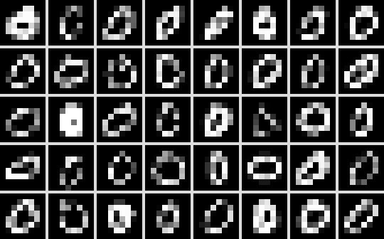
Read the validation histories without treating adversarial losses as quality scores
Both trials use the same fitting row order and latent/noise schedule, with independent parameters and Adam states. Every epoch's validation D and G loss is retained below. The D targets are1/0; raw critic scores are not probabilities. These losses do not measure visual quality or establish convergence.
#include <dm/dm.hpp>
namespace n = dm::nn;
namespace m = n::models;
using A = std::map<std::string, n::Tensor>;
A Read(const std::string& path) {
A a;
for (const auto& [key, value] : n::load_npz(path))
a.emplace(key, value);
return a;
}
int main() {
auto p = dm::graphics::RPlot::create();
p.y_limits(0, 1.4);
for (int k = 0; k < 2; ++k) {
std::string name = k ? "modulated" : "adain";
std::ifstream in("build/style_gan/" + name + "/history.tsv");
std::string line;
std::getline(in, line);
std::vector<double> epoch, d, g;
double a, b, c;
while (in >> a >> b >> c) {
epoch.push_back(a);
d.push_back(b);
g.push_back(c);
}
if (epoch.size() != 3)
throw std::runtime_error("three fixed epochs");
p.lines(
epoch,
d,
name + " D",
k ? dm::graphics::RGB{22, 163, 74} : dm::graphics::RGB{37, 99, 235},
2)
.lines(
epoch,
g,
name + " G",
k ? dm::graphics::RGB{147, 51, 234} : dm::graphics::RGB{220, 38, 38},
2);
}
p.x_label("Fixed epoch; final checkpoint is epoch3")
.y_label("Held-out validation least-squares loss")
.title("All validation points, independent two-variant runs")
.save_svg("build/style_learning.svg");
}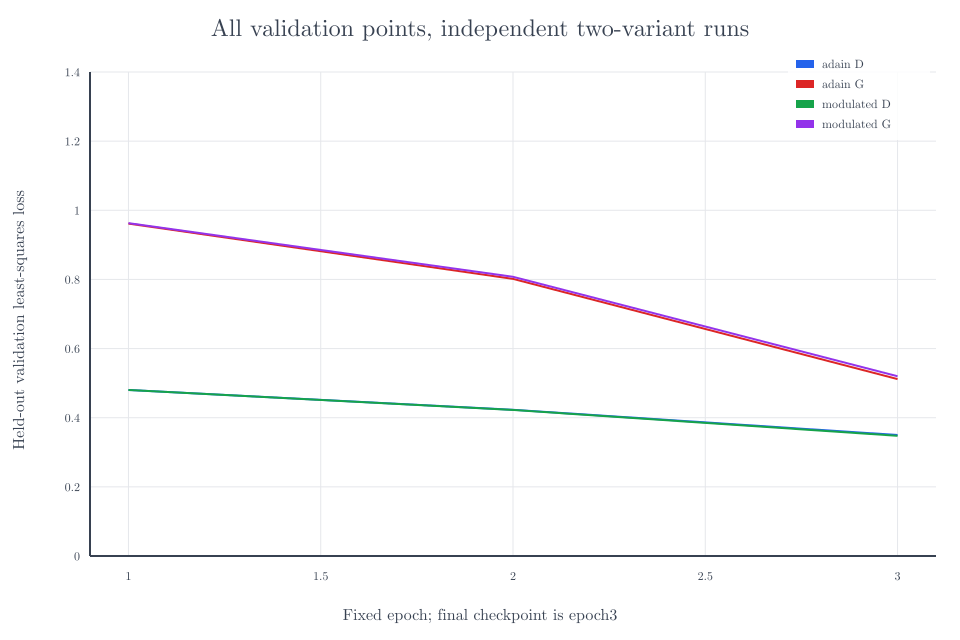
AdaIN: keep all original generation and style/noise galleries
The generated grid contains the first40 held-out latent rows. Mixing rows use columns: ordinary(W,W), second-layer mix(W,other_W), first-layer mix(other_W,W), other_W at both layers, and changed spatial noise with the original W. Each row is the same latent identity across columns; this does not make generated samples paired with real digit targets. Noise is unchanged for all four style columns.
#include <dm/dm.hpp>
namespace n = dm::nn;
namespace m = n::models;
using A = std::map<std::string, n::Tensor>;
A Read(const std::string& path) {
A a;
for (const auto& [key, value] : n::load_npz(path))
a.emplace(key, value);
return a;
}
int main() {
std::filesystem::copy_file(
"build/style_gan/adain/generated.png",
"build/style_adain_generated.png",
std::filesystem::copy_options::overwrite_existing);
}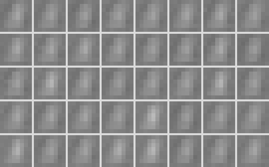
#include <dm/dm.hpp>
namespace n = dm::nn;
namespace m = n::models;
using A = std::map<std::string, n::Tensor>;
A Read(const std::string& path) {
A a;
for (const auto& [key, value] : n::load_npz(path))
a.emplace(key, value);
return a;
}
int main() {
std::filesystem::copy_file(
"build/style_gan/adain/style_mixing.png",
"build/style_adain_style_mixing.png",
std::filesystem::copy_options::overwrite_existing);
}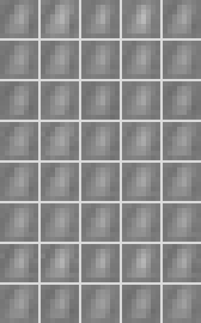
#include <dm/dm.hpp>
namespace n = dm::nn;
namespace m = n::models;
using A = std::map<std::string, n::Tensor>;
A Read(const std::string& path) {
A a;
for (const auto& [key, value] : n::load_npz(path))
a.emplace(key, value);
return a;
}
int main() {
std::filesystem::copy_file(
"build/style_gan/adain/truncation_noise.png",
"build/style_adain_truncation_noise.png",
std::filesystem::copy_options::overwrite_existing);
}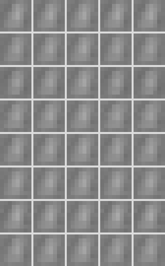
Truncation uses a fresh2048-row prior bank(zseed6733) mapped through the final G. Its center is computed as Double mean(W) then cast back to Float32; there is no moving average. W_psi=center+psi*(W-center). The shared-noise truncation columns repeat the first row's noise maps at every row; ordinary/changed-noise columns retain their original per-row banks. A collapse at psi0 here describes a controlled input condition, not a fitted model collapse.
Modulated: keep all original generation and style/noise galleries
The generated grid contains the first40 held-out latent rows. Mixing rows use columns: ordinary(W,W), second-layer mix(W,other_W), first-layer mix(other_W,W), other_W at both layers, and changed spatial noise with the original W. Each row is the same latent identity across columns; this does not make generated samples paired with real digit targets. Noise is unchanged for all four style columns.
#include <dm/dm.hpp>
namespace n = dm::nn;
namespace m = n::models;
using A = std::map<std::string, n::Tensor>;
A Read(const std::string& path) {
A a;
for (const auto& [key, value] : n::load_npz(path))
a.emplace(key, value);
return a;
}
int main() {
std::filesystem::copy_file(
"build/style_gan/modulated/generated.png",
"build/style_modulated_generated.png",
std::filesystem::copy_options::overwrite_existing);
}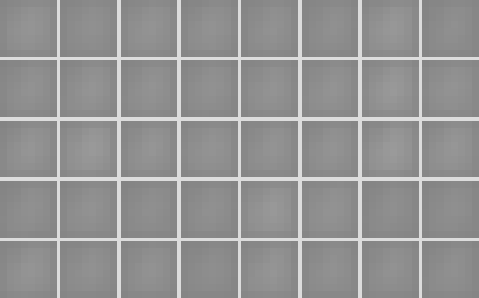
#include <dm/dm.hpp>
namespace n = dm::nn;
namespace m = n::models;
using A = std::map<std::string, n::Tensor>;
A Read(const std::string& path) {
A a;
for (const auto& [key, value] : n::load_npz(path))
a.emplace(key, value);
return a;
}
int main() {
std::filesystem::copy_file(
"build/style_gan/modulated/style_mixing.png",
"build/style_modulated_style_mixing.png",
std::filesystem::copy_options::overwrite_existing);
}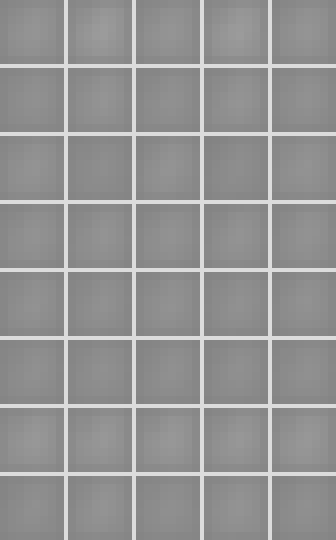
#include <dm/dm.hpp>
namespace n = dm::nn;
namespace m = n::models;
using A = std::map<std::string, n::Tensor>;
A Read(const std::string& path) {
A a;
for (const auto& [key, value] : n::load_npz(path))
a.emplace(key, value);
return a;
}
int main() {
std::filesystem::copy_file(
"build/style_gan/modulated/truncation_noise.png",
"build/style_modulated_truncation_noise.png",
std::filesystem::copy_options::overwrite_existing);
}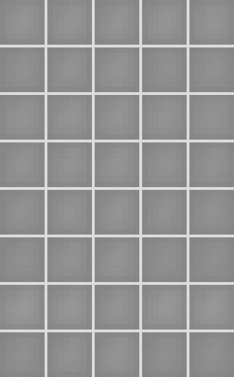
Truncation uses a fresh2048-row prior bank(zseed6733) mapped through the final G. Its center is computed as Double mean(W) then cast back to Float32; there is no moving average. W_psi=center+psi*(W-center). The shared-noise truncation columns repeat the first row's noise maps at every row; ordinary/changed-noise columns retain their original per-row banks. A collapse at psi0 here describes a controlled input condition, not a fitted model collapse.
Vary noise after fixing every style to the same center
The next additional control keeps both styles at the estimated center while retaining independent per-row test noise. After strengths learn, those outputs need not coincide. It contrasts with the original psi0 column, whose noise is shared too. Each pair below shows shared-noise psi0 on the left and independent noise psi0 on the right; eight AdaIN rows precede eight modulated rows.
#include <dm/dm.hpp>
namespace n = dm::nn;
namespace m = n::models;
using A = std::map<std::string, n::Tensor>;
A Read(const std::string& path) {
A a;
for (const auto& [key, value] : n::load_npz(path))
a.emplace(key, value);
return a;
}
int main() {
std::vector<n::Tensor> panels;
for (const std::string v : {"adain", "modulated"}) {
auto control = Read("build/style_gan/" + v + "/style_controls.npz"),
extra = Read("build/style_gan/" + v + "/extra-controls.npz");
auto shared = control.at("truncated_fake2"), varied = extra.at("zero_style_varying_noise");
if (n::max(n::abs(varied - n::tile(n::take_rows(varied, {0}), {200, 1, 1, 1}))).item() <= 1e-7)
throw std::runtime_error("learned noise remains active at psi0");
for (int row = 0; row < 8; ++row) {
panels.push_back(n::take_rows(shared, {row}));
panels.push_back(n::take_rows(varied, {row}));
}
}
n::save_image_grid(
n::concat(panels, 0), "build/style_zero_style_noise.png", 2, 0, 1, 4, 220 / 255., 8);
}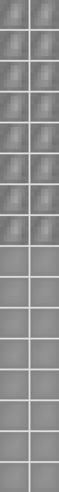
Quantify source controls and preserve the limits of the result
Final test D/G are.3452040553/.5124273896 for AdaIN and .3427920640/.5206323266 for the modulated variant. Maximum style-mixing effects are.0973485708/.0484675169, and changed-noise effects.0158234239/.0060599446. Those are pixel changes, not perceptual scores. The modulated doubled-first-gain control changes the output by at most3e-6 while roughly halving its demodulator; the guard prevents exact scale invariance. The plot below retains every test row's maximum pixel change for each of the two controls, sorted independently.
#include <dm/dm.hpp>
namespace n = dm::nn;
namespace m = n::models;
using A = std::map<std::string, n::Tensor>;
A Read(const std::string& path) {
A a;
for (const auto& [key, value] : n::load_npz(path))
a.emplace(key, value);
return a;
}
int main() {
auto p = dm::graphics::RPlot::create();
p.y_limits(-.005, .18);
for (int k = 0; k < 2; ++k) {
std::string v = k ? "modulated" : "adain";
auto out = Read("build/style_gan/" + v + "/outputs.npz"),
c = Read("build/style_gan/" + v + "/style_controls.npz");
auto style = n::maximum(
n::abs(out.at("fake") - c.at("mixed_first")),
n::abs(out.at("fake") - c.at("mixed_second")));
auto noise = n::abs(out.at("fake") - c.at("changed_noise_fake"));
auto a = n::max(n::reshape(style, {200, 64}), {1}).to_vector<double>(),
b = n::max(n::reshape(noise, {200, 64}), {1}).to_vector<double>();
std::sort(a.begin(), a.end());
std::sort(b.begin(), b.end());
std::vector<double> row(200);
std::iota(row.begin(), row.end(), 1.);
p.lines(
row,
a,
v + " style",
k ? dm::graphics::RGB{22, 163, 74} : dm::graphics::RGB{37, 99, 235},
2)
.lines(
row,
b,
v + " noise",
k ? dm::graphics::RGB{147, 51, 234} : dm::graphics::RGB{220, 38, 38},
2);
}
p.x_label("Sorted held-out row index; independent sorting per curve")
.y_label("Maximum absolute pixel change within each8x8 row")
.title("All200 test rows retain measurable style and learned-noise effects")
.save_svg("build/style_effects.svg");
}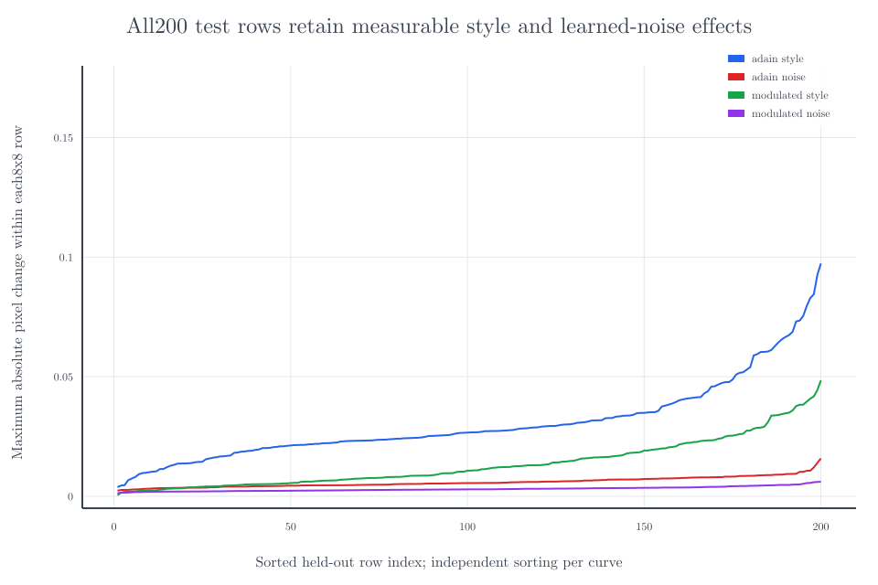
The independent NumPy oracle checks220384 native parameter partials, 576982 forward values,136 scalar finite differences, all384 Adam transitions bit exactly and every phase's unselected owners. All89600 resized pixels and 6000 fitting row visits match. Original19 archives contain1743020 exact values; all792 phase/probe archives add928688 exact values. Six original PNGs, four TSVs and non-timing metric records match. All latent/noise banks, initial zero-noise controls, per-layer mixing, common-noise truncation, double-gain control and validation/final test losses are checked separately.
The weak fixed-final results remain visible. Neither latent controls nor a small adversarial loss establishes digit fidelity, diversity or coverage. Canonical models and reusable normalization/modulation live in the C++ core; Python/R expose those same operations and owning fields. Full independent language experiment loops remain a separate migration task. Optional development oracle: scripts/check_style_gan.py; preparation and report execution require only the native datamunge API and normal C++ report toolchain.